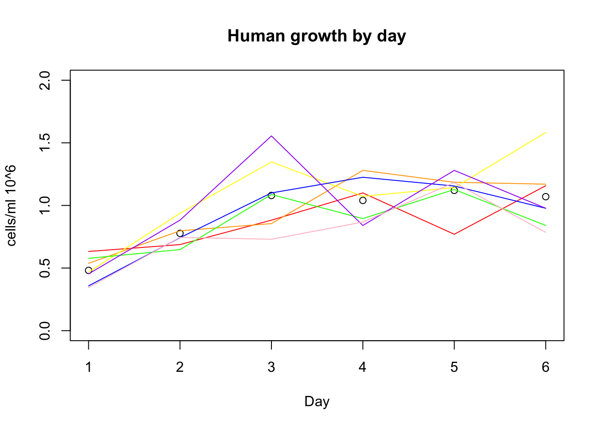
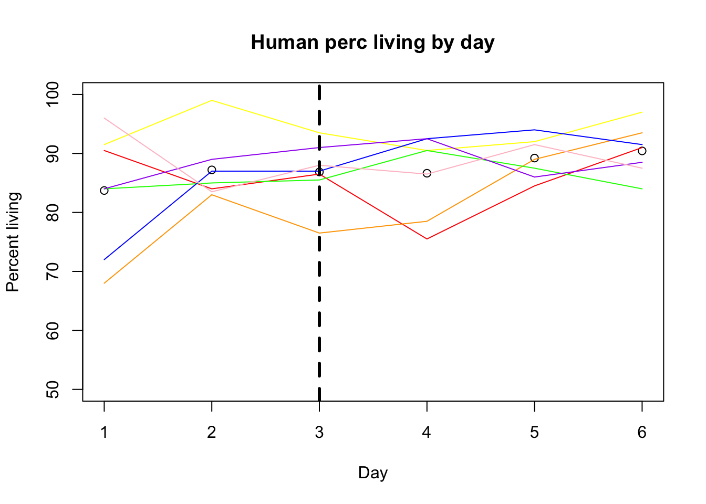
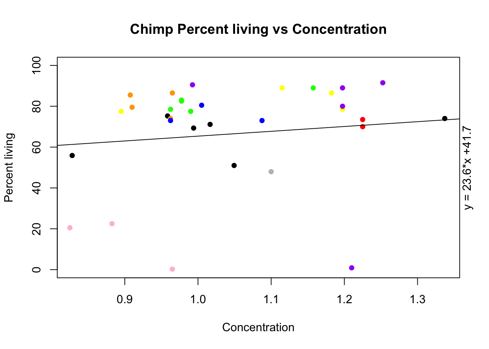
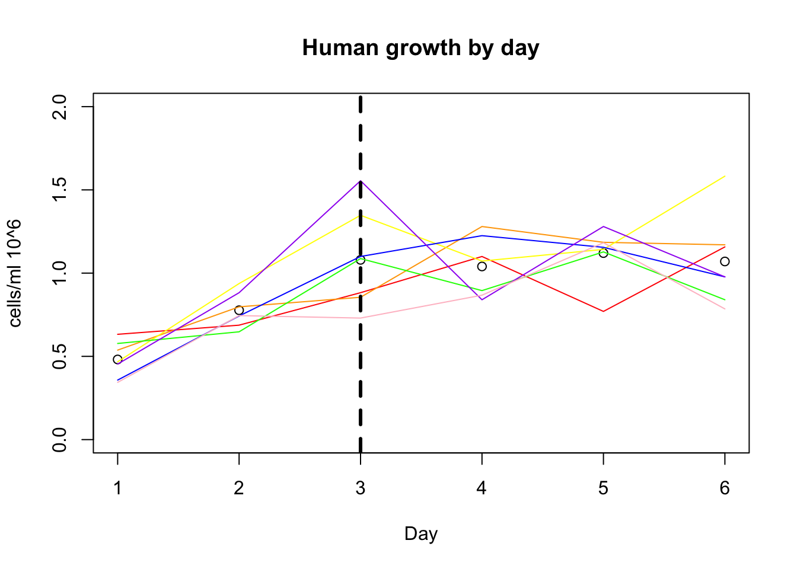

Last updated: 2018-03-16
Code version: 1707538
library(dplyr)
Attaching package: 'dplyr'The following objects are masked from 'package:stats':
filter, lagThe following objects are masked from 'package:base':
intersect, setdiff, setequal, unionlibrary(tidyr)
library(ggplot2)growth=read.csv("../data/growth_curve_3.16.csv", header = TRUE)
#filter out control
growth_e= growth %>% filter(control=="e") %>% mutate(avg_h=(h_18486+ h_18499 + h_18502 + h_18504 + h_18510 + h_18517 + h_18523)/7) %>% mutate(avg_c=(c_c3641 + c_pt30 + c_pt91 + c_3610 + c_3659 + c_3622 + c_18358 + c_18359)/8)plot(growth_e$avg_h, xlab="Day", ylim=c(0,2), ylab="cells/ml 10^6", main="Human growth by day")
lines(growth_e$h_18486, col="red")
lines(growth_e$h_18499, col="orange")
lines(growth_e$h_18502, col="yellow")
lines(growth_e$h_18504, col="green")
lines(growth_e$h_18510, col= "blue")
lines(growth_e$h_18517, col="purple")
lines(growth_e$h_18523, col="pink")
plot(growth_e$avg_c, xlab="Day", ylim=c(0,3), ylab="cells/ml 10^6", main="Chimp Growth by day")
lines(growth_e$c_c3641, col="red")
lines(growth_e$c_pt30, col="orange")
lines(growth_e$c_pt91, col="yellow")
lines(growth_e$c_3610, col="green")
lines(growth_e$c_3659, col= "blue")
lines(growth_e$c_18358, col="purple")
lines(growth_e$c_18359, col="pink")
lines(growth_e$c_3622, col="black")alive=read.csv("../data/perc_alive_3.16.csv", header=TRUE)
alive_e= alive %>% filter(control=="e") %>% mutate(avg_h=(h_18486+ h_18499 + h_18502 + h_18504 + h_18510 + h_18517 + h_18523)/7) %>% mutate(avg_c=(c_c3641 + c_pt30 + c_pt91 + c_3610 + c_3659 + c_3622 + c_18358 + c_18359)/8)plot(alive_e$avg_h, xlab="Day", ylim=c(50,100), ylab="Percent living", main="Human perc living by day")
lines(alive_e$h_18486, col="red")
lines(alive_e$h_18499, col="orange")
lines(alive_e$h_18502, col="yellow")
lines(alive_e$h_18504, col="green")
lines(alive_e$h_18510, col= "blue")
lines(alive_e$h_18517, col="purple")
lines(alive_e$h_18523, col="pink")
plot(alive_e$avg_c, xlab="Day", ylim=c(0,100), ylab="Percent living", main="Chimp perc living by day")
lines(alive_e$c_c3641, col="red")
lines(alive_e$c_pt30, col="orange")
lines(alive_e$c_pt91, col="yellow")
lines(alive_e$c_3610, col="green")
lines(alive_e$c_3659, col= "blue")
lines(alive_e$c_18358, col="purple")
lines(alive_e$c_18359, col="pink")
lines(alive_e$c_3622, col="black")Transpose so I can look at percent alive vs the concentrations:
alive_e_t= alive_e %>% t
colnames(alive_e_t)= c(1:6)
growth_e_t=growth_e %>% t
colnames(growth_e_t) = c(1:6)plot(alive_e$avg_h ~ growth_e$avg_h, ylab="Percent living", xlab="Concentration", ylim=c(50,100), pch=16, main="Human Percent living vs Concentration")
points(alive_e$h_18486 ~ growth_e$h_18486, col="red", pch=16)
points(alive_e$h_18499 ~ growth_e$h_18499, col="orange", pch=16)
points(alive_e$h_18502 ~ growth_e$h_18502, col="yellow", pch=16)
points(alive_e$h_18504 ~ growth_e$h_18504, col="green", pch=16)
points(alive_e$h_18510 ~ growth_e$h_18510, col="blue", pch=16)
points(alive_e$h_18517 ~ growth_e$h_18517, col="purple", pch=16)
points(alive_e$h_18523 ~ growth_e$h_18523, col="pink", pch=16)
plot(alive_e$avg_c ~ growth_e$avg_c, ylab="Percent living", xlab="Concentration", ylim=c(0,100), pch=16, main="Chimp Percent living vs Concentration")
points(alive_e$c_c3641 ~ growth_e$c_c3641, col="red", pch=16)
points(alive_e$c_pt30 ~ growth_e$c_pt30, col="orange", pch=16)
points(alive_e$c_pt91 ~ growth_e$c_pt91, col="yellow", pch=16)
points(alive_e$c_3610 ~ growth_e$c_3610, col="green", pch=16)
points(alive_e$c_3659 ~ growth_e$c_3659, col="blue", pch=16)
points(alive_e$c_18358 ~ growth_e$c_18358, col="purple", pch=16)
points(alive_e$c_18359 ~ growth_e$c_18359, col="pink", pch=16)
points(alive_e$c_3622 ~ growth_e$c_3622, col="grey", pch=16) days:
1: saturday
2: sunday
3: monday
4: tuesday
5: wednesday
6: thursday
Before feeding was saturday through monday.
sessionInfo()R version 3.4.2 (2017-09-28)
Platform: x86_64-apple-darwin15.6.0 (64-bit)
Running under: macOS Sierra 10.12.6
Matrix products: default
BLAS: /Library/Frameworks/R.framework/Versions/3.4/Resources/lib/libRblas.0.dylib
LAPACK: /Library/Frameworks/R.framework/Versions/3.4/Resources/lib/libRlapack.dylib
locale:
[1] en_US.UTF-8/en_US.UTF-8/en_US.UTF-8/C/en_US.UTF-8/en_US.UTF-8
attached base packages:
[1] stats graphics grDevices utils datasets methods base
other attached packages:
[1] bindrcpp_0.2 ggplot2_2.2.1 tidyr_0.7.2 dplyr_0.7.4
loaded via a namespace (and not attached):
[1] Rcpp_0.12.15 knitr_1.18 bindr_0.1 magrittr_1.5
[5] munsell_0.4.3 colorspace_1.3-2 R6_2.2.2 rlang_0.1.6
[9] plyr_1.8.4 stringr_1.2.0 tools_3.4.2 grid_3.4.2
[13] gtable_0.2.0 git2r_0.21.0 htmltools_0.3.6 lazyeval_0.2.1
[17] yaml_2.1.16 rprojroot_1.3-2 digest_0.6.14 assertthat_0.2.0
[21] tibble_1.4.2 purrr_0.2.4 glue_1.2.0 evaluate_0.10.1
[25] rmarkdown_1.8.5 stringi_1.1.6 compiler_3.4.2 pillar_1.1.0
[29] scales_0.5.0 backports_1.1.2 pkgconfig_2.0.1 This R Markdown site was created with workflowr